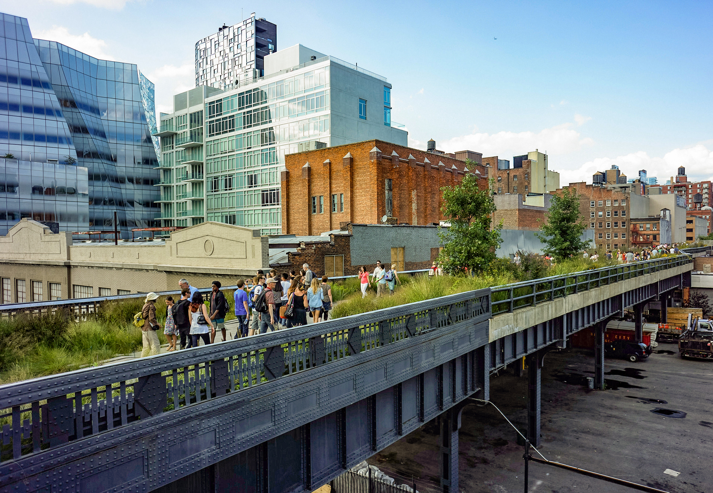
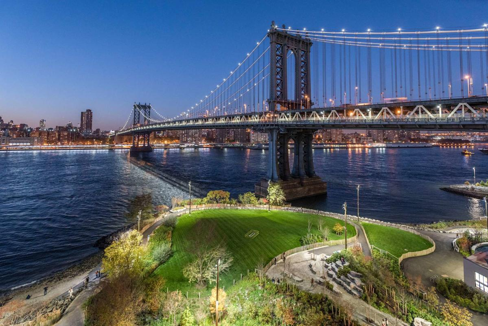
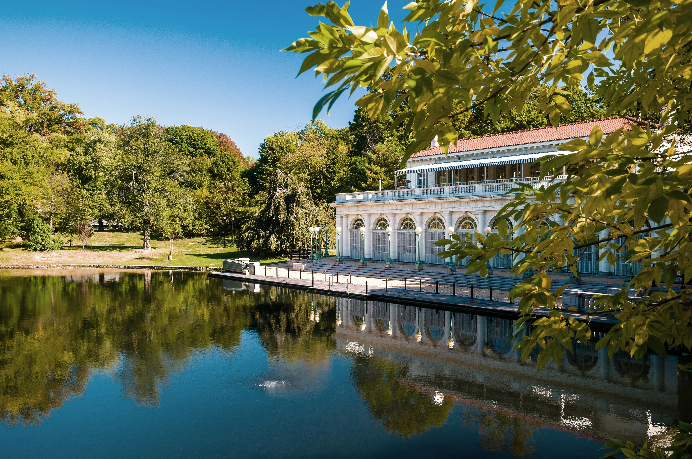
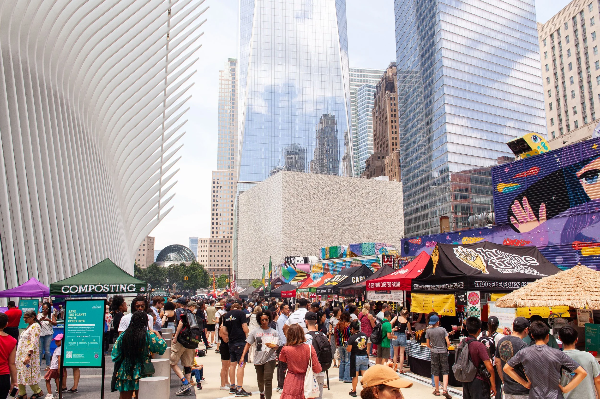
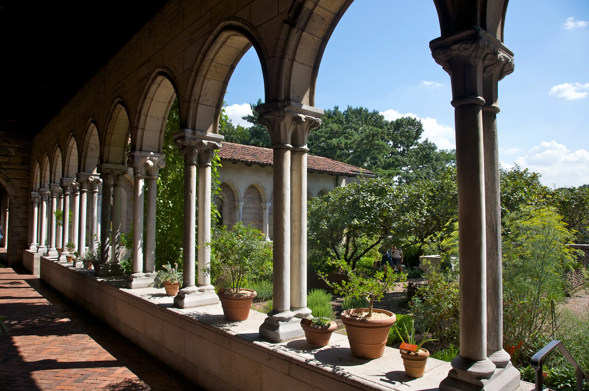

The High Line
This elevated park built on a former rail line offers unique city views, art installations, and green space. Walk from Chelsea to Hudson Yards and discover why locals love this urban oasis.
Iconic landmarks and hidden gems across NYC's five boroughs. These are the spots locals actually recommend, no overpriced tourist traps, just places worth your time.

This elevated park built on a former rail line offers unique city views, art installations, and green space. Walk from Chelsea to Hudson Yards and discover why locals love this urban oasis.

Sprawling waterfront park with unbeatable Manhattan skyline views. Perfect for picnics, bike rides, or watching the sunset behind the Brooklyn Bridge without the bridge crowds.
Contemporary art space in Queens that's more experimental and less crowded than its Manhattan counterpart. Summer Warm Up concerts are a local favorite.

Brooklyn's answer to Central Park, designed by the same architects, but locals argue it's better. Explore the Long Meadow, Lakeside, or catch free concerts in summer.

America's largest weekly open-air food market. Saturdays in Williamsburg, Sundays in Prospect Park. Sample everything from ramen burgers to artisanal ice cream.

Medieval art and architecture tucked away in Upper Manhattan's Fort Tryon Park. This Met branch feels worlds away from the city, with peaceful gardens and stunning Hudson River views.
See all featured attractions on the map. Click markers for more details.
Many of these attractions are near incredible food spots. Check out the Food Guide to pair your itinerary with authentic NYC dining experiences in the same neighborhoods.